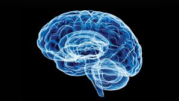

Articulo 1: El Papel de la Atención Selectica en el Aprendizaje
La atención selectiva, la capacidad de focalizar recursos cognitivos en información relevante e ignorar distractores, es fundamental para el aprendizaje. Estudios de neuroimagen revelan la implicación de redes frontoparietales en este proceso...

Foto del Montaje de un Cerebro, Starlink.
Proyeccion de un Cerebro
Articulo 2: la neuroplasticidad
La neuroplasticidad, la asombrosa capacidad del cerebro para reorganizar su estructura y función en respuesta a la experiencia o la lesión, juega un papel crucial en la recuperación tras un ictus. Después de un daño cerebral, áreas no afectadas pueden asumir las funciones perdidas mediante la formación de nuevas conexiones neuronales. La terapia de rehabilitación, enfocada en estimular las capacidades afectadas, aprovecha esta plasticidad para promover la recuperación motora, sensorial y cognitiva. La investigación actual se centra en identificar los mecanismos moleculares y celulares que impulsan la neuroplasticidad post-ictus para desarrollar intervenciones terapéuticas más efectivas y personalizadas. A continuación anexamos un vídeo explicativo del Fisioterapeuta Marco Kantun: Video de Explicacion de la Neuroplasticidad